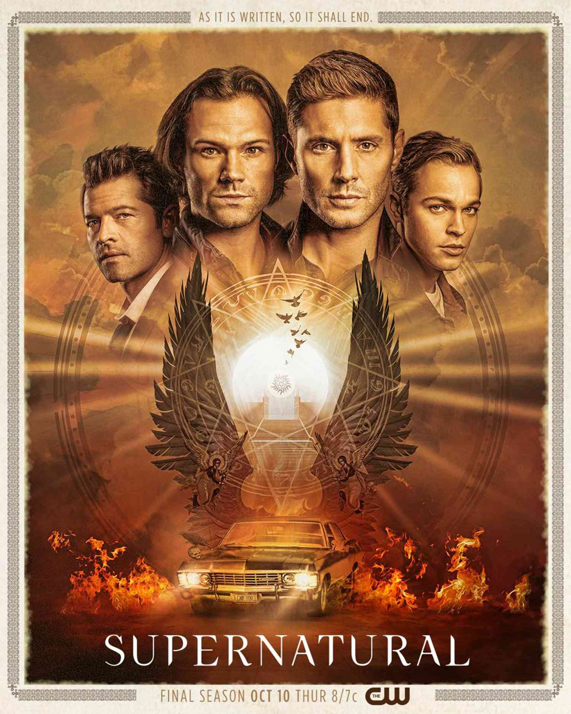

Lista de filmes e séries
 Os Piratas do Chapéu de Palha enfrentam o governador de Gran Tesoro, país sede da maior cidade de
entretenimento do mundo, onde piratas, fuzileiros e milionários se reúnem em um santuário absoluto
regido por suas próprias leis.
Os Piratas do Chapéu de Palha enfrentam o governador de Gran Tesoro, país sede da maior cidade de
entretenimento do mundo, onde piratas, fuzileiros e milionários se reúnem em um santuário absoluto
regido por suas próprias leis.

Os irmãos Sam e Dean Winchester encaram cenários sinistros caçando monstros. Velhos truques, armas e
esconderijos não funcionam mais e seus amigos os traem, forçando os irmãos a contar um com o outro
enquanto enfrentam novos inimigos.
 Dominic Toretto e Letty vivem uma vida pacata ao lado do filho. Mas eles logo são ameaçados pelo
passado de Dom: seu irmão desaparecido Jakob, que retorna e está trabalhando ao lado de Cipher. Cabe
a Dom reunir a equipe novamente para enfrentá-los.
Dominic Toretto e Letty vivem uma vida pacata ao lado do filho. Mas eles logo são ameaçados pelo
passado de Dom: seu irmão desaparecido Jakob, que retorna e está trabalhando ao lado de Cipher. Cabe
a Dom reunir a equipe novamente para enfrentá-los.